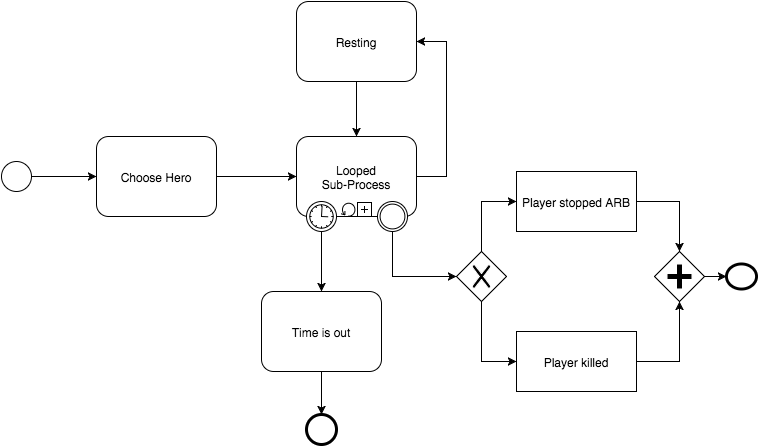

Created by Ian Brodetsky / @ianbrode
Меня зовут Ян. Я работаю в Rambler&Co фронтендером. По образованию я журналист. Когда-то защитил диссертацию по зарубежной истории.
Система контроля версий (СКВ) — это система, регистрирующая изменения в одном или нескольких файлах с тем, чтобы в дальнейшем была возможность вернуться к определённым старым версиям этих файлов.
Документация и файлы: www.git-scm.com
Социальная сеть на основе гита: Github.com
git init
git add
git commit
git push/pull
git merge/rebase
$: mkdir codeschool
$: cd codeschool
$: git clone https://github.com/ianbrode/wastelandWonderer.git
$: git init
//измените что-нибудь
$: git add -A
$: git commit -m "Initial commit"
Язык гипертекстовой разметки + каскадные стили
function getRandomInt(min, max) {
return Math.floor(Math.random() * (max - min + 1)) + min;
}
'string'; //строка
true/false; //булево значение
123; //число
[1, 2, 4.6, 9]; //массив
var a = 1; //назначение переменной
function doSomething(arg){ //функция
//код функции
};
{'name': 'John Snow'} //объект
//Дерево условий
if (true) {
//выполнится только код тут
} else if (false) {
//этот код не выполнится
} else {
//и этот тоже
}
for (var i = 0; i < 10; i++){
//будет выполнено 10 раз
}
Удобные отвёртки
Удобный инструмент для разработки
Забрать и почитать документацию можно тут:
jquery.comПозволяет быстро набросать структуру страницы без необходимости писать все стили самому.
Забрать и почитать документацию можно тут:
getbootstrap.comBPMN - Business Process Management Notation
Интрумент для описания бизнес-процессов

var vaultDwellers = [
{
name: 'Plain Joe',
max_hp: 10,
cur_hp: 10,
att: 1,
def: 10,
stims: 2,
caps: 0,
xp: 0,
level: 1,
},
];
name: 'Plain Joe' //имя
max_hp: 10 //максимальное количество здоровья
cur_hp: 10 //текущее здоровье
att: 1 //атака
def: 10 //защита
stims: 2 //аптечки
caps: 0 //деньги
xp: 0 //экспа
level: 1 //уровень
Описать свой тип героя
var Events = [
{
name: 'Bandit',
disposition: 'agressive',
cur_hp: 5,
att: 1,
def: 10,
xpVal: 200,
desk: 'You see wasteland scum.'
},
]
name: 'Bandit', //имя события
disposition: 'agressive', //отношение события к персонажу
cur_hp: 5, //здоровье
att: 1, //уровень атаки
def: 10, //уровень защиты
xpVal: 200, //опыта за убийство
desk: 'You see wasteland scum.' //описание
Описать свой тип события